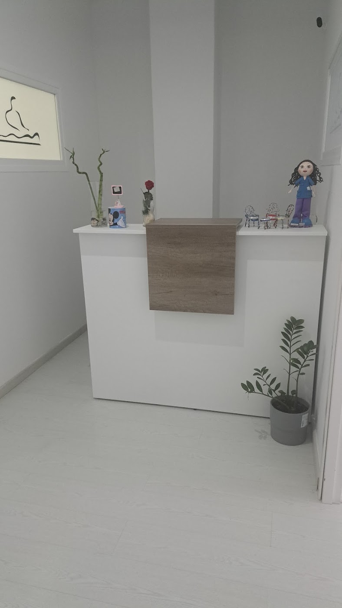
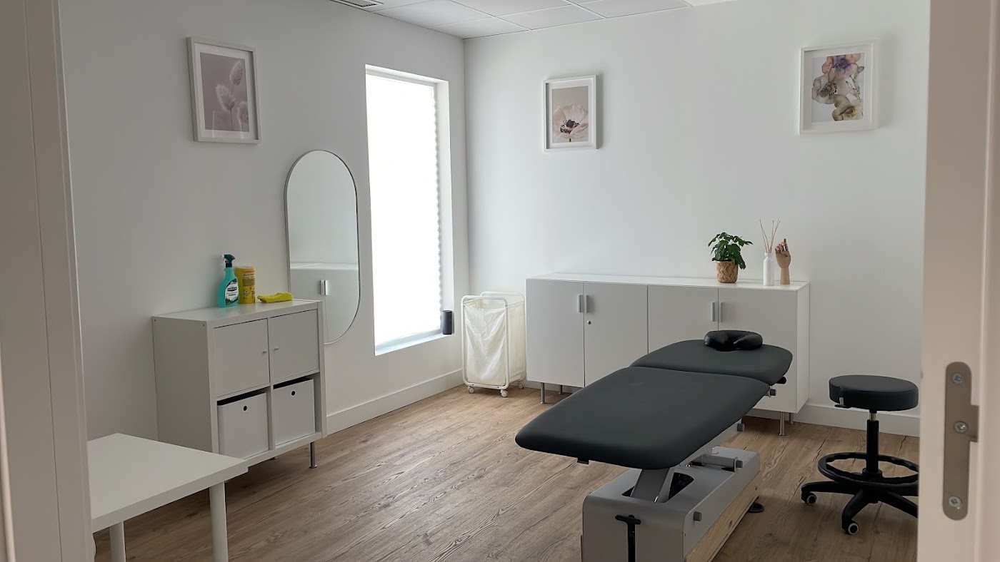

Nuestra clínica
Así es Fisionogales
Una clínica luminosa y tranquila en la calle de las Eras, 25.



Verónica NogalesAlexLunes a viernes
Verónica y Alex te tratan con un trato ultra personalizado y con tecnología de última generación: diatermia, ecografía y electrólisis percutánea. Más de 15 años cuidando a sus pacientes en Fuenlabrada.
★★★★★4,9 · 51 reseñas en Google
Cada paciente es único. Escuchamos, valoramos y buscamos el origen del problema para que notes la mejoría desde las primeras sesiones.
Pacientes que llevan años confiando en Verónica.
Sesiones amenas en las que te sientes cómodo.
Diatermia, ecógrafo y EPTE para tratamientos más eficaces.
51 reseñas de pacientes.
Todo organizado por grupos, para que encuentres lo que buscas en segundos.
Una clínica luminosa y tranquila en la calle de las Eras, 25.

4,9 de 5 estrellas · 51 reseñas
"Llevo 15 años tratándome con Verónica. Es una profesional excepcional. No solo da un trato ultra personalizado sino que es cercana y se preocupa por ti."
María D."Me ha tratado Vero ya bastantes cosas y siempre acierta en el gatillo. Es una gran profesional y se nota que le gusta su trabajo."
Rubén F."Hoy he ido por primera vez con Alex y estoy encantada. Un profesional de 11, he salido como nueva y me he sentido súper cómoda."
A. G.Escríbenos por WhatsApp, cuéntanos qué te pasa y te damos cita.
C. de las Eras, 25
28944 Fuenlabrada, Madrid